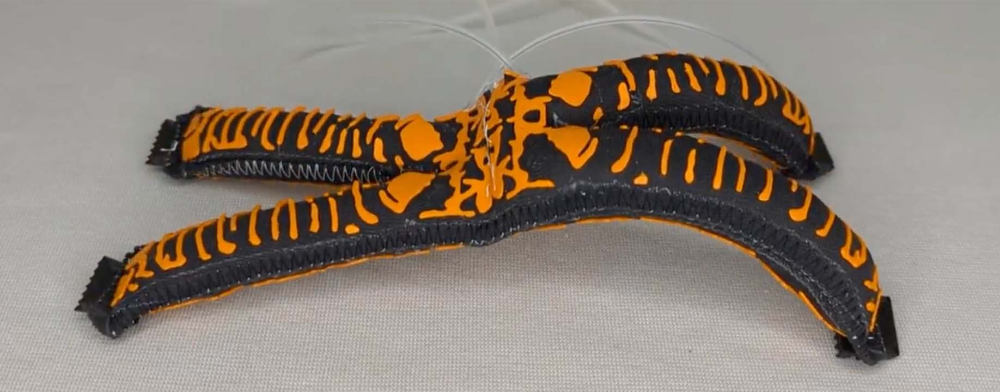
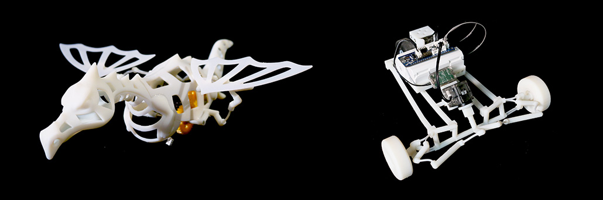
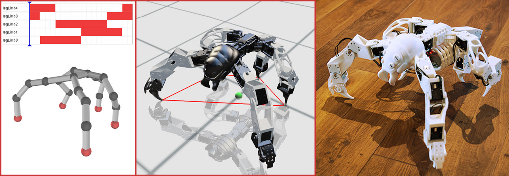
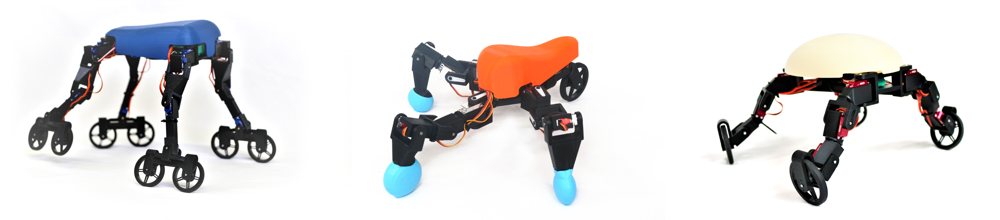

A Topology Optimization Approach for Designing Robotic Skins

ToRoS: A Topology Optimization Approach for Designing Robotic Skins
ACM Transactions on Graphics (Proc. ACM SIGGRAPH Asia 2023)
Robotics is shifting from rigid machines to adaptable, resilient systems capable of safe interaction with humans and complex environments. Soft robotics, robotic materials, and advanced mechanism design enable robots with compliant, tunable, and bio-inspired structures that better integrate with the physical world. By leveraging programmable materials and physics-based modeling, we can create robots with enhanced adaptability and functionality. This research has broad implications for medical devices, wearable assistive systems, and autonomous exploration, pushing the boundaries of how robots interact with and navigate their surroundings.

ToRoS: A Topology Optimization Approach for Designing Robotic Skins
ACM Transactions on Graphics (Proc. ACM SIGGRAPH Asia 2023)


